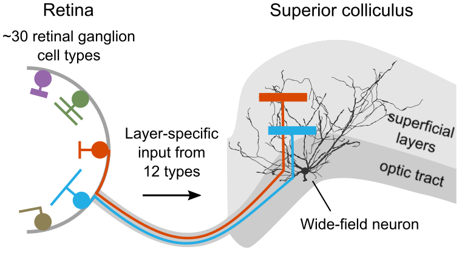
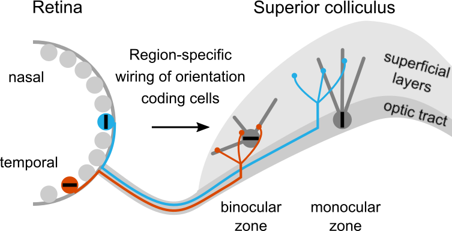

Dendritic architecture enables de novo computation of salient motion in the superior colliculus.
Kühn NK, Li C, Baimacheva N, Zimmer J, Reinhard K, Bonin V, Farrow K, 2025, Current Biology.
DOI: 10.1016/j.cub.2025.06.060.

Retinal origin of orientation but not direction selective maps in the superior colliculus.
De Malmazet D* & Kühn NK*, Li C, Farrow K, 2024, Current Biology.
DOI: 10.1016/j.cub.2024.02.001.

Pathway-specific inputs to the superior colliculus support flexible responses to visual threat.
Li C* & Kühn NK*, Alkislar I, Sans-Dublanc A, Zemmouri F, Paesmans S, Calzoni A, Ooms F, Reinhard K, Farrow K, 2023, Science Advances.
DOI: 10.1126/sciadv.ade3874